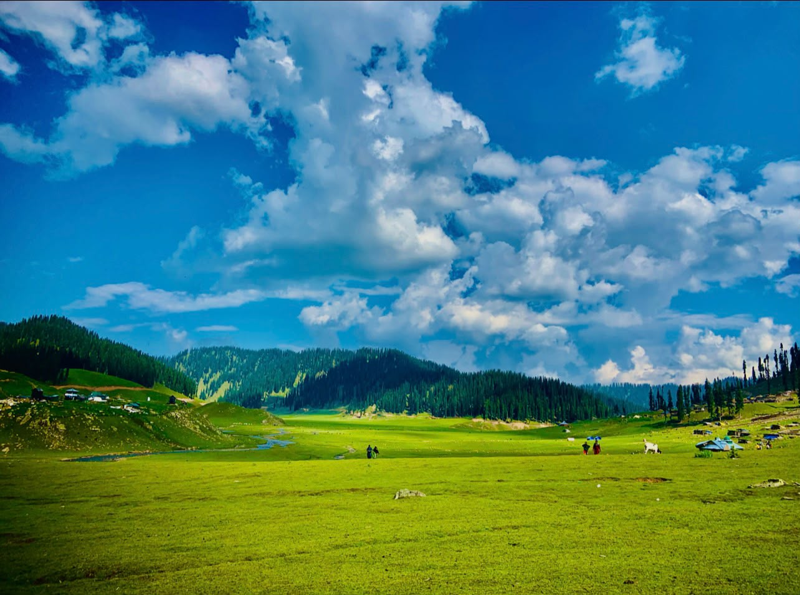
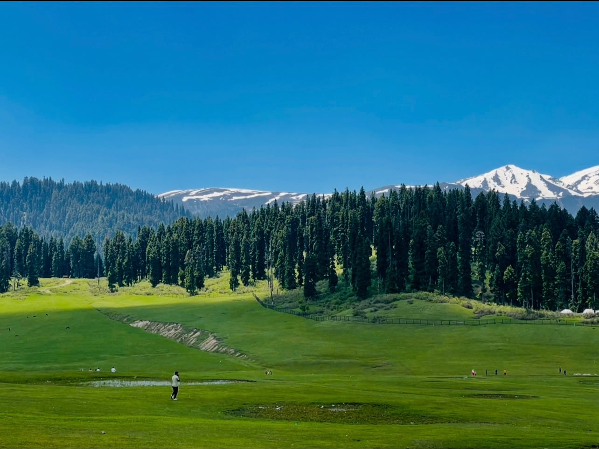
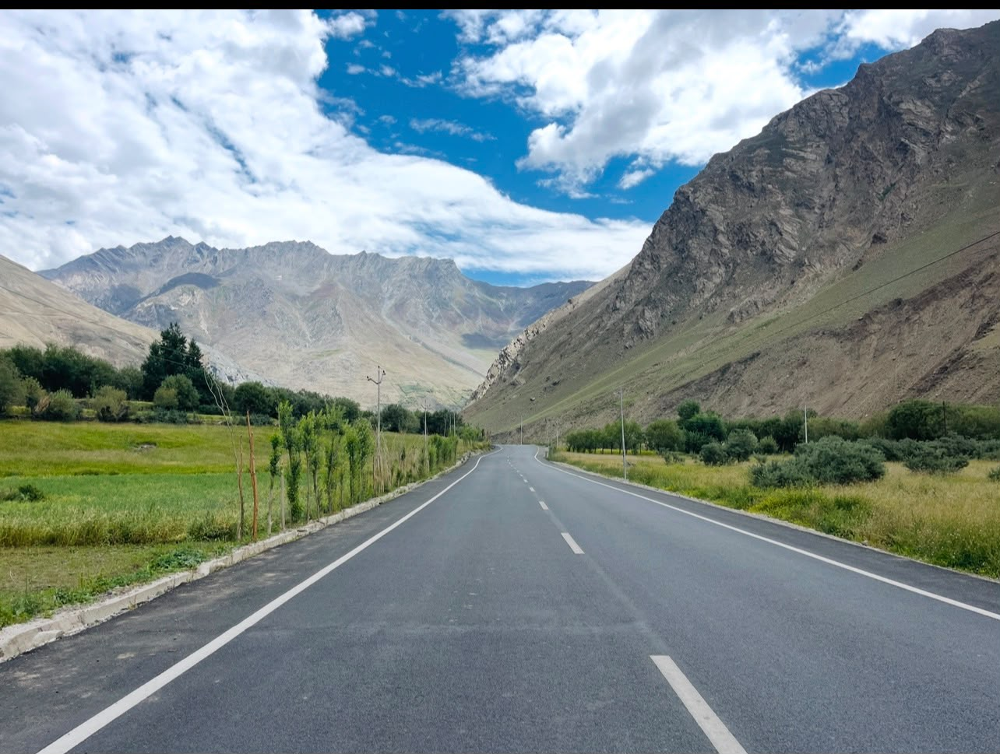
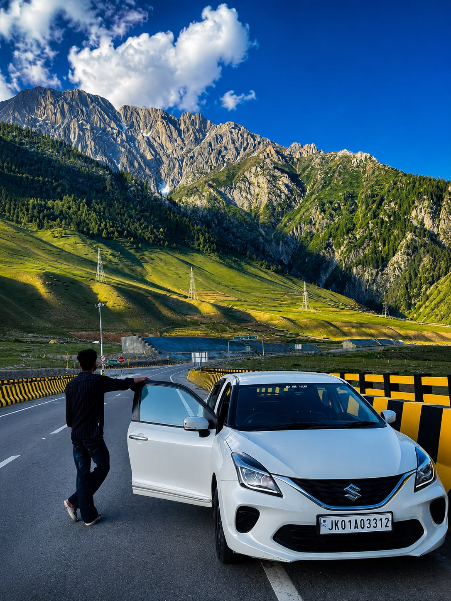

Traversing remote mountain corridors, archiving endangered indigenous traditions, and bridging timeless wilderness with high-end narrative.
Mohammad Sadiq Paswal is a photographer, travel explorer, and visual storyteller from Manigam, Ganderbal, Jammu & Kashmir. Passionate about discovering hidden landscapes and authentic experiences, he captures the beauty of Kashmir through his lens—from snow-covered mountains and crystal-clear lakes to vibrant culture and everyday life. Living in the heart of the Kashmir Valley, he believes that every destination has a unique story waiting to be shared. Through this website, he showcases travel experiences, breathtaking photography, and the natural wonders that make Kashmir one of the world’s most beautiful places.
Capturing the majestic mountains, valleys, rivers, lakes, and changing seasons of Kashmir in their purest form.
Exploring hidden destinations, trekking routes, and iconic tourist attractions while sharing authentic travel experiences.
Documenting the traditions, architecture, festivals, and everyday life that reflect the rich heritage of Jammu & Kashmir.
From exploring the valleys of Kashmir to sharing unforgettable travel stories, every journey has shaped my perspective and every photograph preserves a memory.
My passion for photography began with exploring the beautiful landscapes of Kashmir. I started capturing mountains, rivers, villages, and everyday life, learning the art of visual storytelling with every journey. Tags: First Camera • Nature • Learning
Visited some of Kashmir’s most breathtaking destinations, including Sonamarg, Manasbal Lake, Wular Lake, Naranag, Doodhpathri, Gulmarg, Pahalgam, and Dachigam National Park, building a growing collection of travel and landscape photographs. Tags: Travel • Landscape • Adventure
Focused on creating a professional photography portfolio, documenting Kashmir’s changing seasons, culture, architecture, lakes, and hidden destinations while refining editing and storytelling skills. Tags: Portfolio • Editing • Storytelling
Launched this website to share my travel experiences, photography collections, and destination guides. My goal is to inspire people to discover the beauty of Kashmir and preserve its unforgettable moments through photography. Tags: Website • Tourism • Photography

Nestled in the heart of Bangus Valley, Limber Wildlife Sanctuary is a pristine Himalayan landscape known for its lush meadows, dense forests, crystal-clear streams, and rich wildlife.

A breathtaking hill destination surrounded by lush green meadows, dense pine forests, and snow-capped mountains. Doodhpathri is renowned for its crystal-clear streams, peaceful landscapes, and refreshing alpine beauty.

A spectacular mountain highway winding through the rugged landscapes of Ladakh. The Kargil–Zanskar Road offers breathtaking views of towering peaks, deep valleys, and dramatic Himalayan scenery, making it one of India’s most scenic road journeys.

Known as the “Meadow of Gold,” Sonamarg is a breathtaking Himalayan destination surrounded by snow-capped peaks, lush green valleys, and glacial rivers. Its spectacular landscapes and scenic mountain roads make it one of Kashmir’s most iconic travel destinations.
For expedition collaborations, speaking engagements, research inquiries, or heritage archiving projects, please reach out via direct message or email.